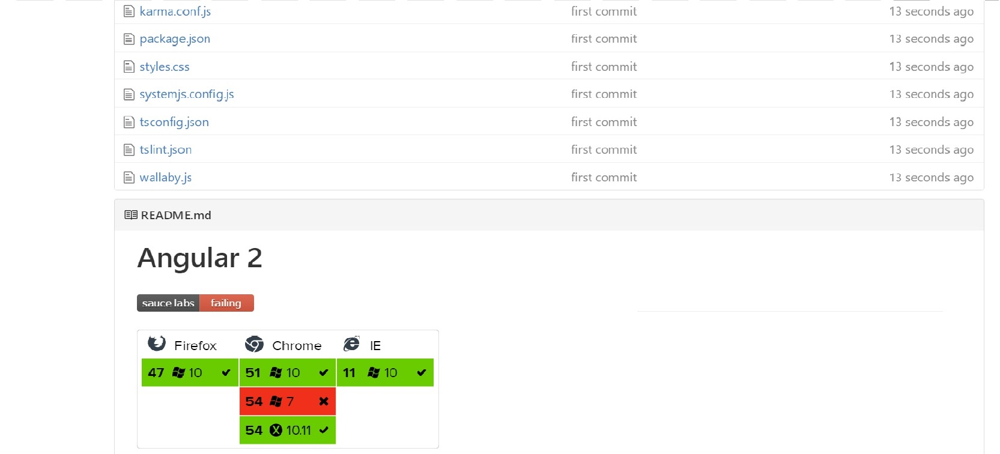

Автоматическое e2e тестирование в Облаке
Nikolaev Ivan
FE developer, Positive TechnologiesКоротко о главном
- Что мы хотим от e2e?
- Почему же в облаке?
- Наши кандидаты
- Почему же Sauce Labs?
- Как можно приготовить
Что мы хотим от e2e?
- Высокая скорость выполнения тестов
- Проводить тесты на различных платформах
- Качественные репорты и логи о проделанной работе
Почему же в облаке?
-
Быстрота выполненияТест-план на различных конфигурациях возможно запускать параллельно. Но есть лимит
-
Большой выбор окруженийБолее сотен комбинаций браузеров/устройств/ОС
-
Легко конфигуритьНастраивается буквально парой строчек кода
- Не надо настраивать ВМ
Вид изнутри
Наши кандидаты
| TestingBot | Browserstack | Sauce lab | |
|---|---|---|---|
| Наличие тестового аккаунта | |||
| Большой выбор конфигураций | |||
| Поддерживаются основные тестовые фреймворки | |||
| Запись видео, скриншоты выполения тестов | |||
| Доступна интеграция с CI (Circle, Jenkins, Travis) | |||
| Использует защищенный туннель для соединения | |||
| Есть status-badge | |||
| Есть status-martix | |||
| Необходимость ручного обновления статуса выполнения теста |
Как это работает
Как можно приготовить?
- Настраиваем protractor.config.js
- Скачиваем Sauce Connect
- Запускаем Sauce Connect
- Запускаем тесты
- Результат

Добавляем приправы
- Добавляем в настройки конфигурации параметр shardTestFiles: true
-
Добавляем библиотеку для работы с apinpm i saucelabs --save-dev
- Добавляем аннотацию к тестам:
Как результат имеем
Status Badges
Использование в html

Использование в README
[]
(https://saucelabs.com/u/YOUR_SAUCE_USERNAME)

Итого
- Повышенная производительность и качество тестов
- Легкость настройки
- Наглядность результата тестирования